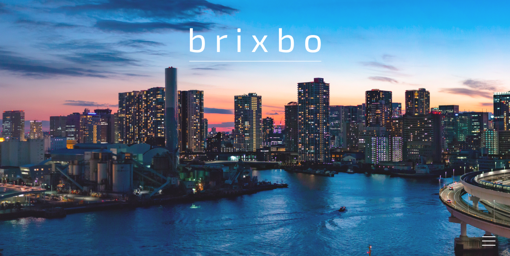
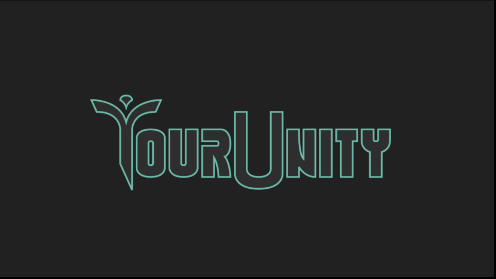

03 / Past work
Archive
Earlier projects, kept here as a record rather than as the front of the site.

brixbo
The goal of this project is to create a modular energy storage system that can be scaled up to meet the needs of a variety of applications.

YourUnity
A platform for discovering local community service opportunities. A website for organizations and a mobile app for volunteers.